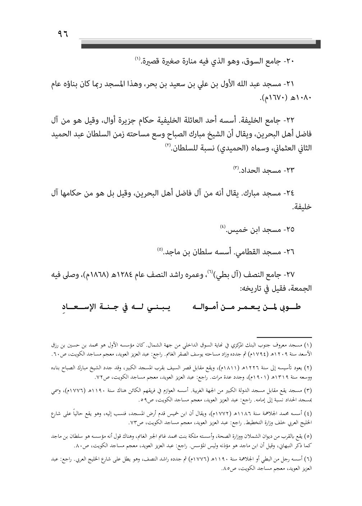

تأسس ١٢٥٠هـ (١٨٣٤م)؛ كما ذكره النبهاني · صفحات من كتاب إبراهيم حامد الخالدي، النبهاني وتحفته: الشيخ محمد بن خليفة النبهاني وكتابه التحفة النبهانية في تاريخ الجزيرة العربية، ص ٩٦
مسجد القطامي في قائمة النبهاني لمساجد الكويت، ومن أسسه
ما هي
في قائمة مساجد الكويت من التحفة النبهانية يرد في الرقم ٢٦: «مسجد القطامي. أسسه سلطان بن ماجد». ويضيف الهامش ٥: «يقع بالقرب من ديوان الشملان ووزارة الصحة، وأسسته ملكة بنت محمد غانم الجبر الغانم، وهناك قول أنه مؤسسه هو سلطان بن ماجد كما ذكر النبهاني، وقيل أن ابن ماجد هو مؤذنه وليس المؤسس»، ويحيل إلى عبدالعزيز العويد، معجم مساجد الكويت، ص ٨٠.
أهميتها
يذكر النبهاني في مطلع القرن العشرين المسجد باسم العائلة، ويفسر الهامش اسمه الآخر «مسجد سلطان».
صور الصفحات


أسماء أخرى
المصادر
إبراهيم حامد الخالدي، النبهاني وتحفته، ص ٩٦ والهامش ٥، نقلا عن عبدالعزيز العويد، معجم مساجد الكويت، ص ٨٠
كيف كُتب هذا النص: يذكر الكتاب قولين في المؤسس: ملكة بنت محمد الغانم، أو سلطان بن ماجد، ولا يرجح أحدهما. ولا تظهر سنة النشر والناشر في الصفحات المرسلة.
افتح في الموقع التفاعلي